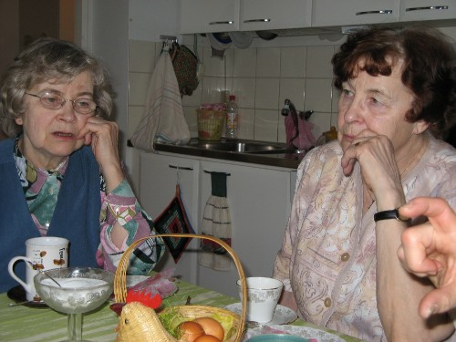
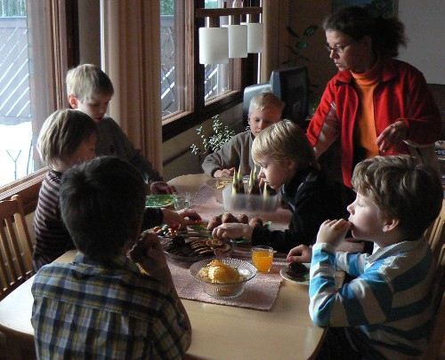
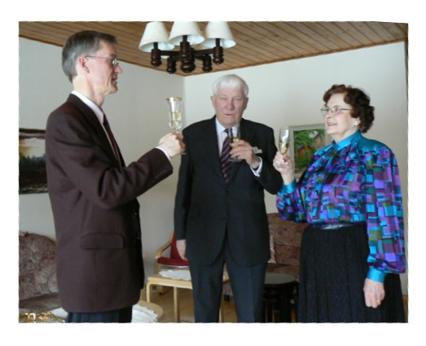
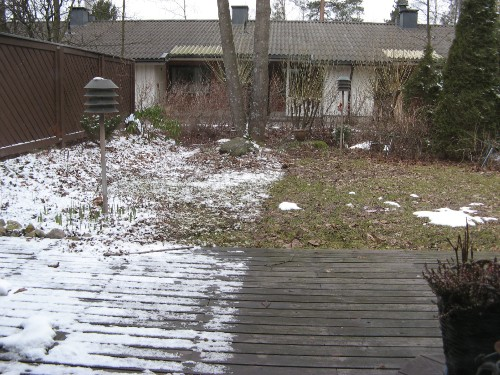
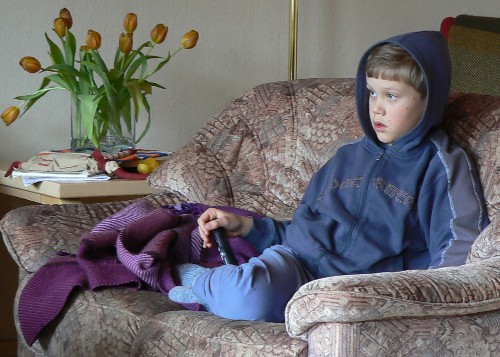
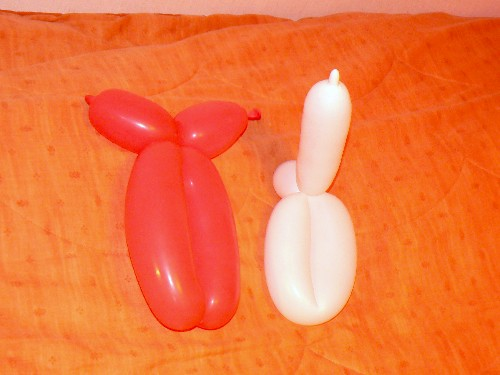

Maalikuu 2008 |
P‰‰si‰isbrunssiP‰‰si‰inen ei olisi mit‰‰n ilman mummin tarjoamaa p‰‰si‰isbrunssia. P‰‰si‰inen olikin poikkeuksellisen aikaisin t‰n‰ vuonna. M‰mmit, pashat, kananmunat ja muut herkut maistuivat. Samin syntt‰ritSamin syntt‰rit‰ j‰rjestettiin meill‰ koton. Vieraiksi oli kutsuttu viisi Samin luokkatoveria. Ajattelimme, ett‰ tokaluokkalaiset eiv‰t ole en‰‰ mit‰‰n pikkulapsia ja osaavat ehk‰ juhlia v‰h‰n rauhallisemmin. T‰ss‰ kuitenkin erehdyimme. Meno oli ihan yht‰ vauhdikasta kuin aikaisempinakin vuosina. Mit‰‰n erityist‰ h‰veli‰isyytt‰ tai vieraskoreutta ei ollut havaittavissa. Kaiken lis‰ksi pojat keksiv‰t leikki‰ piilosta. V‰h‰n meit‰ hirvitti, mist‰ kaikkialta he piiloja keksiv‰t. Onneksi selvittiin ilman vahinkoja. Pekka 50 v.Olen sit‰ mielt‰, ett‰ ihminen el‰‰ joka hetki, juuri nyt, el‰m‰ns‰ parasta aikaa. Olen myˆs sit‰ mielt‰, ett‰ yrityksiss‰ j‰rjest‰‰ ikimuistoiset ja tajunnan r‰j‰ytt‰v‰t syntm‰p‰iv‰- tai mitk‰ tahansa muut juhlat on jotakin keinotekoista. Siksi vietimme omia juhliani kotioloissa vain l‰himpien sukulaisten kanssa. P‰iv‰nsankarina olin hyvin tyytyv‰inen juhliin. Tilaa ei ollut kovin paljon, mutta tunnelma oli vastaavasti sit‰ tiiviimpi. Lahjat olivat mieluisia, eik‰ pitk‰stytt‰vi‰ puheita pidetty. Kuohuviinimaljoja nosteltiin, paitsi mummin ja vaarin kanssa. Heid‰n kanssaan nautiskelimme aitoa shampanjaa. Suurimmat kiitokset juhlien j‰rjestelyist‰ kuuluvat kahdelle el‰m‰ni t‰rkeimm‰lle naiselle: Mirjalle ja mummille. Ilman Mirjaa olisi koko homma mennyt haaveiluksi ja j‰‰nyt puolitiehen ja mummi oli suurena apuna keittiˆss‰. Saa n‰hd‰, miten roolit menev‰t ensi vuonna. |
Kuukauden s‰‰Niin sanottua termist‰ talvea ei Etel‰-Suomeen tullut. Maaliskuussa oli pariin otteeseen kyll‰ runsaastikin lunta, mutta maassa se ei pysynyt viikkoakaan yhteen menoon. Kuukauden ajatusTietoa ei hallita tiedolla. Sit‰ voidaan hallita vain arvoilla. Professori Matti Bergstrˆm Kuukauden kuvaAatami ja Eeva |